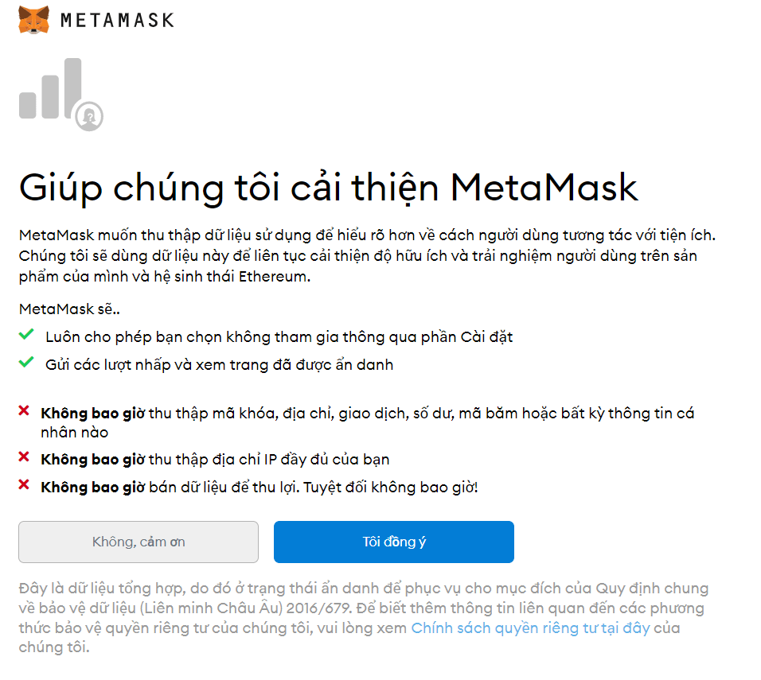

Metamask là gì?
Metamask là một phần mềm ví tiền điện tử, ban đầu được sử dụng để tương tác với chuỗi khối Ethereum. Hiện nay ví Metamask có thể tích hợp rất nhiều blockchain khác nhau. Gồm phiên bản ví App dành cho Mobile và tiện ích ứng dụng trên Chrome hay còn gọi là phần mở rộng Extension.
Hiện nay ví Metamask có thể được xem là ví tiêu chuẩn, phổ biến nhất hiện nay. Được sử dụng chính để tương tác với hầu hết các blockchain, và cũng được sử dụng để thử nghiệm các mạng đang testnet.
Các chức năng của ví Metamask Wallet?
Ví Metamask cho phép người dùng lưu trữ và quản lý khóa tài khoản, theo dõi các giao dịch, trao đổi, swap, gửi và nhận tiền điện tử, các token của mạng lưới Ethereum được cài đặt mặc định, đồng thời kết nối an toàn với các ứng dụng phi tập trung thông qua trình duyệt web tương thích hoặc trình duyệt tích hợp sẵn của ứng dụng di động.
Ví App có sẵn trong phần tiện ích mở rộng của trình duyệt Chrome và dưới dạng ứng dụng dành cho thiết bị di động. MetaMask hiện là ví bảo mật an toàn, đăng nhập an toàn, ví hầu như có thể chứa và giao dịch tất cả các token hiện nay.
Ví metamask đã hỗ trợ tiếng việt nên cũng dễ dàng cho các bạn tương tác.
Hướng dẫn cài đặt Metamask Extension trên trình duyệt Chrome
Bước 1: Truy cập website: https://metamask.io/download
Bước 2: Click “Download”, chọn “Install Metamask for Chrome”
Bước 3: Thêm tiện ích vào trình duyệt
Bước 4: Nhập ví nếu bạn đã có “Private Key”, nếu chưa có ví hãy thiết lập chọn click “Tạo Ví’

Bước 5: Đọc kỹ các điều khoản và Đồng ý các điều khoản
Bước 6: Tạo mật khẩu cho ví, nhập mật khẩu 2 lần và xác nhận.
Bước 7: Dưới đây cụm Private Key, đây là khóa ví mất cái này coi như mất tài khoản. Mật khẩu phía trên không quan trọng hơn cái này. Anh em lưu ý lưu lại Private Key và bảo mật tuyệt đối.

Bước 8: Nhập lại thứ tự Private Key đã lưu, và bấm xác nhận. Nếu quên cụm từ khóa bí mật (Seed Phrases) thì đồng nghĩa với việc ví của bạn của mất luôn, nên các bạn cần phải ghi rõ lại Seed Phrases lại vào giấy một cách cẩn thận.

Bước 9: Đồng ý và đi đến giao diện ví. Ở góc trình duyệt có phần gắn app lên trình duyệt. Các bạn click vào biểu tượng để gắn.
Bước 10: Hoàn thành việc gắn ví lên trình duyệt. Sau khi anh em ghim app sẽ nằm trên góc trình duyệt.